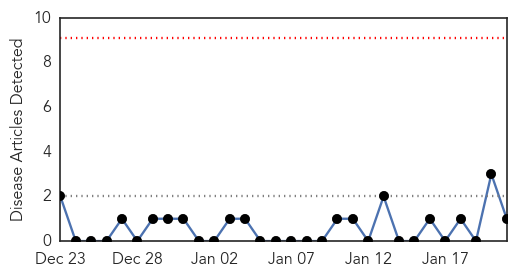
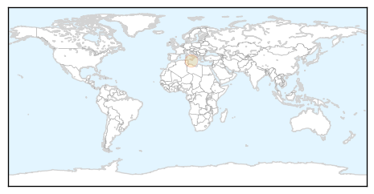
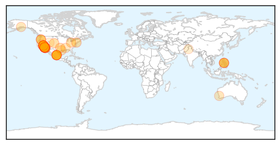

Pertussis
30-Day Web Trend
0 alerts, 0 warnings

30-Day Twitter Trend
0 alerts, 0 warnings

Article Locations
Article Confidences

Top Articles:
Top Tweets:
-
No tweets found for Jan 21, 2015
Measles
30-Day Web Trend
13 alerts, 3 warnings

30-Day Twitter Trend
0 alerts, 0 warnings

Article Locations
Article Confidences
Top Articles:
- 0.998
- 42 measles cases linked to Disneyland
- 0.997
- Measles outbreak linked to Disneyland grows
- 0.996
- California Measles Outbreak Shows How Quickly Disease Can Resurface in U.S.
- 0.995
- Measles outbreak in California: What you need to know
- 0.994
- 5 Disneyland employees diagnosed with measles
- 0.989
- Smart Woman: Measles Outbreak 2015 - Story
- 0.982
- More Measles Cases Traced To Disneyland; 59 Cases Now Confirmed In California
- 0.981
- UPDATE 1-Five Disneyland employees infected with measles in California
- 0.980
- Several Disneyland Employees Diagnosed With Measles
- 0.979
- Disneyland measles outbreak: Cases not limited to the unvaccinated
- 0.977
- CDPH: Don't go to Disneyland if you're not vaccinated
- 0.976
- Dozens of measles cases reported at Disneyland in California
- 0.974
- Disneyland measles outbreak spreads to Bay Area
- 0.974
- Measles outbreak includes 5 Disney theme park workers
- 0.971
- Several Disneyland workers diagnosed with measles
- 0.969
- San Diego County Measles Cases Climb To 13
- 0.966
- No measles vaccination? Don't go to Disneyland, state says
- 0.966
- Health Officials Monitor Those Exposed to Measles
- 0.966
- Health Officials: Skip Disneyland If You're Not Vaccinated For Measles
- 0.966
- People Not Vaccinated For Measles Urged To Stay Away From Disneyland
- 0.962
- Measles outbreak raises question of vaccine exemptions
- 0.952
- Three new measles cases reported in North County
- 0.948
- Disneyland workers being treated for measles
- 0.945
- 22-month-old girl is the latest to be hit by measles outbreak linked to Disney California
- 0.934
- As Disneyland measles outbreak spreads, O.C. bars students lacking proof of shots
- 0.934
- As Disneyland measles outbreak spreads, O.C. bars students lacking proof of shots
- 0.934
- As Disneyland measles outbreak spreads, O.C. bars students lacking proof of shots
- 0.934
- 23 unvaccinated Orange County students told to stay home after measles exposure
- 0.921
- Disneyland-Linked Measles Outbreak Here Rises to 13 Cases
- 0.899
- 3 New Measles Cases Confirmed in SD
- 0.884
- Lane County measles case: Patient did not attend Rose Bowl, officials say
- 0.883
- Disney's Measles Outbreak—A Reason To Reconsider Upholding Vaccination Practices
- 0.879
- KATU.com - Portland News, Sports, Traffic Weather and Breaking News - Portland, Oregon
- 0.871
- Measles outbreak includes 5 Disney theme park employees
- 0.869
- This is California’s worst measles outbreak in 15 years
- 0.866
- Several Disneyland employees diagnosed with measles
- 0.845
- Measles cases continue to spread in California
- 0.836
- 5 Cast Members Contracted Illness During Recent Incident
- 0.816
- Five states reporting measles cases traced to Disneyland outbreak
- 0.815
- Measles Cases Continue To Spread, 59 Now Infected « CBS Sacramento
- 0.811
- If you've been vaccinated, how protected are you?
- 0.804
- Vaccine waivers now require educational meeting
- 0.803
- Five Disney Employees Hit by Measles
- 0.797
- 2 Your Health: "Only a matter of time" before measles comes to Alaska, health officials say
- 0.789
- Measles scare on Singapore to Perth Scoot flight, health authorities warn of symptoms
- 0.787
- Measles Outbreak Spreads, Infects 5 Disneyland Employees
- 0.763
- Measles outbreak includes 5 Disney theme park employees
- 0.753
- Disneyland measles crisis should wake up the anti-vaccination crowd
- 0.753
- Students Who Haven't Been Vaccinated Banned from School Following Disneyland Measles Outbreak
- 0.724
- Measles outbreak highlights low vaccination rates at SoCal schools
Showing top 50 articles...
Top Tweets:
-
No tweets found for Jan 21, 2015